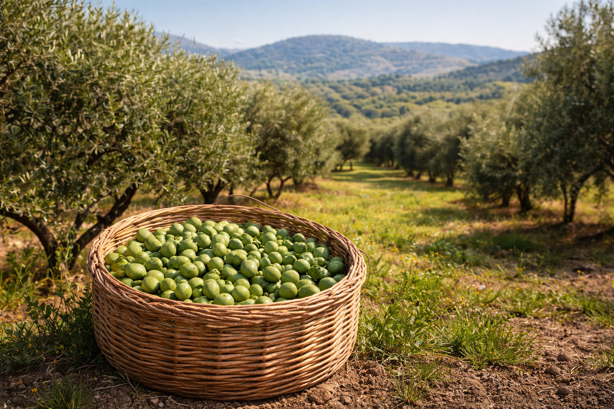
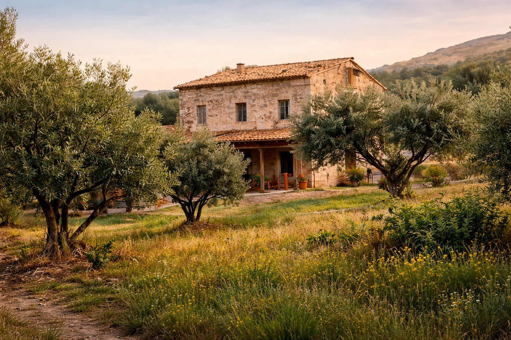
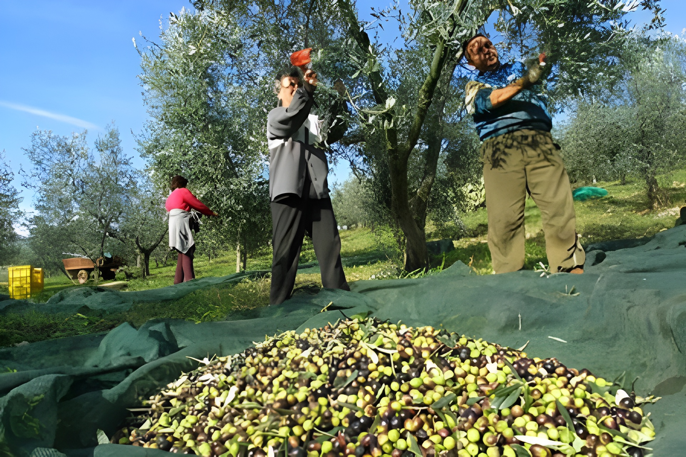
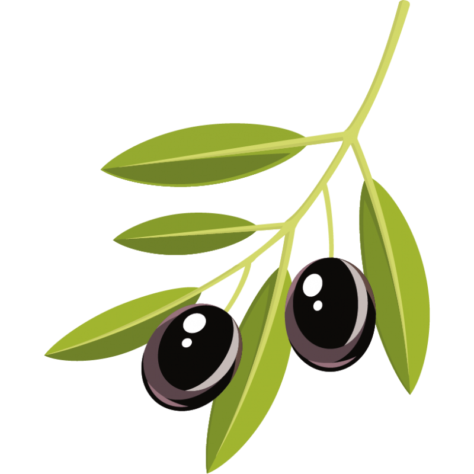
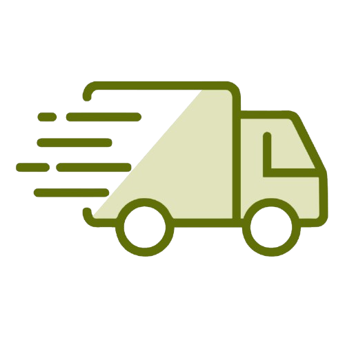

Certifications


Qualité naturelle issue de fermes locales
Découvrir Nos Produits
Certifiée biologique depuis 2015, cette ferme de 8 hectares se distingue par ses pratiques agro-écologiques et une production limitée de haute qualité.

Niché sur les hauteurs de Fquih Ben Saleh, ce domaine de 22 hectares combine techniques traditionnelles et pressage à froid moderne pour une qualité optimale.

Une exploitation familiale de 15 hectares, spécialisée dans la variété Picholine Marocaine. Fondée en 1978, elle produit une huile aux arômes herbacés intenses.

Les olives sont récoltées à la main entre novembre et janvier pour préserver leur qualité et leurs arômes.

Moins de six heures après la récolte, les olives sont acheminées au moulin afin d'éviter toute oxydation.
Chaque lot est analysé et contrôlé pour garantir une qualité constante et conforme à nos standards.